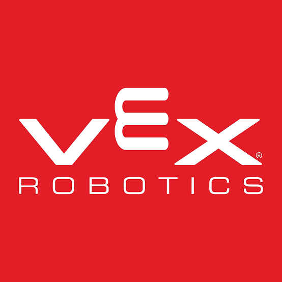

All students are natural scientists and engineers. They love to question, tinker, experiment and play. VEX competitions foster these skills and capitalize on the motivational effects of competitions and robotics to help all students create an identity as a STEM learner. VEX competitions are also a great way to expose students to valuable soft skills like communication, collaboration and time-management in a fun and authentic way. The VEX Robotics competition prepares students to become future innovators with 95% of participants reporting an increased interest in STEM subject areas and pursuing STEM-related careers. Tournaments are held year-round at the regional, state, and national levels and culminate at the VEX Robotics World Championship each April!
